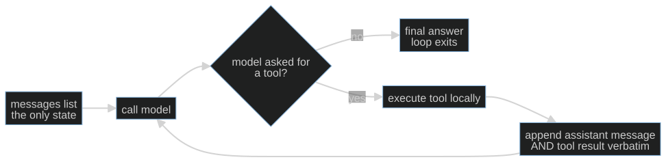

S01-agent-loop — The agent loop
What this teaches: what an LLM agent actually is mechanically — a client-side loop
around a stateless API — and the two invariants that keep it alive: message-list
preservation and tool-call/tool-result pairing.
Time: 20–40 min active reading, 30–60 min notebook work, 5–10 min self-check.
These are planning estimates, not measured learner timings; optional lab time is separate. Prerequisites: none beyond Python.
Hands-on (easy): notebooks/s01_agent_loop_toy.ipynb
Hands-on (hard, optional): labs/s01_loop.md — after the notebook.
Video: Gemini Notebook overview — generated with Google Gemini Notebook (formerly NotebookLM); preview or review, never a substitute for the notebook.
The theory in depth
The API is stateless; the loop is the agent
In the notebook’s client-owned Chat Completions shape, each model call receives
the messages list supplied by the caller. Earlier turns matter only when that
list carries them forward. Treat the list as explicit input: compare the first
request with the next and identify what changed. The local mock has no hidden
conversation store. Real providers can offer other state interfaces; this lesson
does not claim that every API is stateless.
This lesson teaches the client-owned loop — you hold the message list. That is deliberate: it makes the bookkeeping inspectable. Stateful alternatives can manage history for you, but tool execution, failure policy and stopping still need owners.
An agent is what happens when you wrap that stateless call in a loop and let the model decide when to stop:

This diagram is the notebook's complete control-flow skeleton. The model proposes an action or a final answer; Python owns whether to execute, how to record the result, and when to stop. The arrow back to the model carries history, not an invocation of the tool inside the model. Trace that distinction with your finger before looking at the implementation.
The two mechanical invariants
The protocol has rules that are invisible until you break them:
- Preserve the assistant call message. Retain its protocol fields, including the call IDs and arguments, before appending results. Each requested call needs a result associated with its ID before continuing the model conversation. One assistant message may request several tools; the results form a group. An ordinary final assistant explanation with no calls needs no tool result. The OpenAI function-calling guide describes zero, one or multiple calls and preserving the message while returning the results. Dropping the call message but keeping a result creates an orphan.
- Choose how a recoverable tool failure enters the conversation. In this toy,
dispatchcatches the fragile weather service's exception and returns a short error string. The loop records it against the call ID so the mock can respond. This is a selected continuation policy, not a rule to catch every exception and expose its text. A host may stop on failure; sensitive internals should not become tool output. Anthropic's tool-writing guidance treats useful error responses as information for a subsequent correction. Its wire format is different from this OpenAI-shaped toy; do not substitute field names across APIs.
The notebook's mock model rejects orphaned tool results the way a real API does — that one failure class, not full protocol validation — so the experiments fail the way production would, cheaply.
A worked trace: state, operation, evidence
Start with a weather question and label three different things: the request
(the list sent to mock_model), the assistant message inside the response, and
what dispatch returns. The response envelope contains usage metadata too, but
run_loop extracts the assistant message before recording it. Appending the entire
response envelope would put the wrong shape into history. Appending only the
assistant's text would lose the tool call when its content is null.
For a trace on paper, draw columns for row number, role, call IDs and content.
Read _tool_call: the function builds a fresh ID, a function name and JSON-encoded
arguments. Then read dispatch: it decodes the arguments, looks up a Python
function in TOOLS, and calls it. The ID does not choose the Python function;
the name does. The ID associates the eventual result with the requested operation.
That separation becomes especially useful when the same function is called for
two cities. Equal function names do not make their results interchangeable.
At the loop boundary, distinguish message validity from answer truth. A well-paired result saying a fixture city is sunny can be structurally valid and factually wrong outside the fixture. A schema can constrain a city to a string without checking that a city exists. The notebook's weather dictionary is a toy oracle: its behavior is completely visible, which lets you isolate control flow without a real forecast service. Do not turn its response into a weather claim.
Now make the loop state deliberately wrong in your mental trace: erase the assistant call message but retain the tool result. Locate the first function that will read that malformed history. The demonstration already contains this broken variant; you are predicting its behavior, not repairing a production defect. After running it, match the exception to the row you erased. A failure at the next model call can originate in bookkeeping performed during the previous turn.
Stopping and recovery are different decisions
The mock can choose an answer with no tool calls; the host can also exhaust
max_turns. Those are different outcomes. Inspect the returned answer as well as
the turn count: a bounded run is not automatically a successful run. The toy's cap
counts model iterations, including ones that ask for tools. It does not promise
that a tool finishes. If a tool never returns, Python may never reach the next
iteration check. A per-operation timeout or overall deadline addresses elapsed
waiting; the turn budget addresses repeated model decisions. We do not implement
a general executor here.
For the fragile service, separate three observations: an operation failed, the host chose to continue with an error result, and the final model text mentioned that result. Continuation is not successful weather retrieval. The toy catches broad exceptions for the visible experiment; it is deliberately incomplete as a real execution policy. Preserve this experiment and explain its boundary rather than silently "hardening" it into a general harness.
Active reading means drawing the state table and tracing those two counterfactuals,
not spending 40 minutes on the page. If the trace is already obvious, move on;
if JSON roles are new, spend the time aligning each row with a line in run_loop.
Record one uncertainty before the notebook so the later observation has something
to correct.
Exercises (in the notebook, predict first)
Run the notebook top-to-bottom. For each experiment cell, write your prediction as a comment before running it — a prediction you didn't write down is a prediction you'll retroactively fix.
- The happy path: run the loop on the weather question. Predict how many turns the run takes and what each transcript row contains — which roles appear, in what order, carrying what — then run and read the transcript.
- Drop the assistant message: the labeled broken variant removes the append-verbatim line. Predict what fails and where, then run — the mock reproduces the orphaned-tool-result failure class the way a real API does (one check, not full protocol validation), so the failure you watch is the production one.
- The model that never stops:
mock_model_foreverrequests a tool on every turn. Predict what ends the loop and after how many turns — and note whose property the thing that ends it is (the harness's, not the model's). -
The tool that raises: run the fragile weather service. Predict whether the loop crashes or the error becomes data — and where in the transcript it surfaces.
-
Attempt the added two-city weather transcript cell without opening the reference. Supply result records for the supplied calls, preserve their original message, and explain whether a separate ordinary explanation needs a tool result. Run your attempt only after recording the prediction. The native self-check below contains a foldable reference for comparison; it does not fill the cell.
- Write a prediction/observation pair and explain one limit of the mock validator.
After the notebook, optional hard path: the trivia-host loop — same session, live or cassette. Skip it and the easy path is still complete.
State of the art (as of September 9, 2026)
These are narrow primary-source observations reviewed on this date, not a ranking of frameworks or a claim that the whole industry uses one design.
| Development | Status | Take |
|---|---|---|
| Simple workflows and agents (Anthropic, Building effective agents) | already in this path | The workflows-versus-agents distinction helps identify who selects the next step. Start with the simple composition you can inspect. |
| Microsoft Agent Framework brings together ideas from Semantic Kernel and AutoGen, with migration paths; the predecessor projects remain supported | recognize | A framework can own orchestration. Inspect its state and execution boundaries before adopting it. |
| Strict function schemas (OpenAI function-calling guide) require closed objects and required fields; nullable fields can represent optional values | adopt | When using a provider that supports this contract, schema adherence helps with argument shape. It does not establish truth, permission or safe execution. The toy does not simulate strict mode. |
| OpenAI recommends Responses for new projects while Chat Completions remains supported (migration guide) | recognize | This is OpenAI's recommendation. Compare client-owned history with the provider's state interface; neither chooses your tool failure policy for you. |
Annotated readings
- OpenAI function-calling guide. Extract the lifecycle: receive calls, retain their assistant message, execute operations and return ID-matched results. Compare a multi-call response with the notebook's single-call happy path. Read strict-mode constraints separately.
- Anthropic, Building effective agents. Extract the workflows-versus-agents distinction and simple composable patterns. Publication context is December 2024; the conceptual comparison is useful here without treating a changing site banner as evidence.
- Anthropic, Writing effective tools. Inspect how error information helps a later correction. Compare that goal with the toy's broad exception catch; a useful learning example is not a full policy.
Misconceptions and failure modes
- "Every assistant message needs a tool result." Only messages containing tool calls introduce result obligations. An ordinary final answer does not.
- "The immediately previous message must contain the matching call." A multi-call assistant message can be followed by several result messages. Account for every call ID in the group rather than looking back exactly one row.
- "The cap means success, and bounded turns mean bounded time." Inspect the final outcome separately; a hung tool needs an elapsed-time bound.
- "Errors must always be exposed and retried." Continue only when host policy permits it; a short recoverable error result is one possible decision.
Self-check
Try each explanation before expanding it. The native disclosure controls work with Tab and Enter/Space. Optional assistant discussion uses the same conversation; opening a reference is a learner action, not evidence of mastery.
What exactly makes a tool result orphaned? Does ordinary assistant text need a result?
An orphan result has no retained assistant call with its matching ID. One assistant message can carry several calls followed by several ID-matched results. An ordinary assistant explanation with no calls introduces no result obligation. The notebook validator checks only that a prior call exists, not every real protocol rule.A tool raises mid-run. When can the loop continue?
If the host elects to continue, a bounded, useful error result associated with the call lets the model react. The host may instead stop. The toy's catch-all and raw error text are instructional simplifications, not a recommended universal policy.What does max_turns bound, and what does it leave unbounded?
It bounds model iterations. It does not bound an individual tool that never returns. A per-operation timeout or overall deadline addresses waiting. Exhausting the cap also does not establish that the requested weather answer was produced.Two-city notebook attempt: compare your transcript after attempting it
proposed_results = [
{"role": "tool", "tool_call_id": "weather-madrid", "content": "22C, sunny (fixture)"},
{"role": "tool", "tool_call_id": "weather-oslo", "content": "9C, cloudy (fixture)"},
]
repaired = [weather_calls, *proposed_results]
What's next
S02 — Golden sets and baselines: you have a loop that runs; next, how do you measure whether it's any good? The answer is an eval suite, and the surprising part is that the eval suite — not the agent — is where most of the engineering lives.